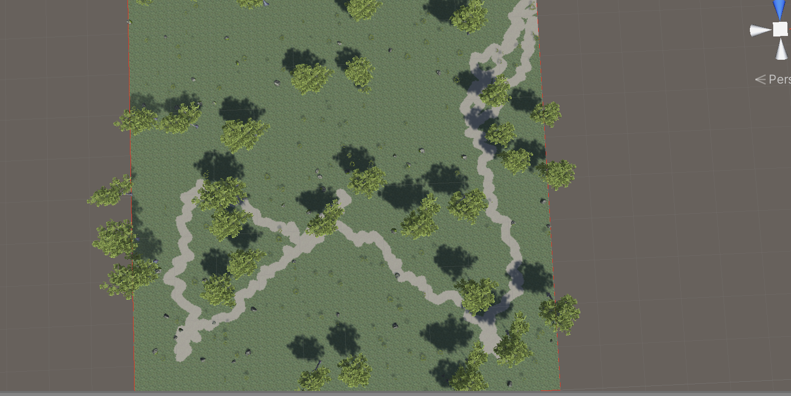

Project Log
Table of Contents
Introduction
This page will consist of the collaborative log from each group member and eventual problems and challenges that the group encounters during the development process of the project.
Usually, the group will write their own individual efforts at the end of the week and everything will be then compose into one shared log which will be written here.
A link to the project source code can be found online at https://github.com/DATX02-20-02/CityCraft, and a link to the full project report which this project log references can also be found online at https://github.com/DATX02-20-02/Report.
Week 20
This section is a work in progress
During the final week, some minor adjustments on the report were made. This included rendering a new cover image for the report with updated materials that render correctly in Blender. Previously, the roofs of buildings were displayed incorrectly and the ocean appeared gray. This was solved by changing the shader for these into the Standard Unity Shader that follows the .glTF specification.
Furthermore, Jacob made some minor improvements to the bibliography of the report according to the feedback the group received from the examiner. The references now show the actual journals and issues rather than just a DOI.
Week 19
This section is a work in progress
Week 18
This section is a work in progress
Since the exhibition was cancelled, and replaced with a video demonstrating our project, we gave this task to Theodor. He did a good job in demonstrating the functionality of our application, and we all gave feedback to him.
Final presentation
It was soon time for a part of the group to do the final presentation. Alexander, Theodor, Marcus, Jacob were the ones to do the presentation, and we decided to use Google Sheets for it. Adding content and manuscripts for the presentation was the primary focus of this week, as well as helping eachother by giving feedback. By practicing the presentation quite a few times, we could ensure that the presentation would go smoothly without any hiccups, which it did. Our supervisor and examinator were happy with our presentation, which was good to hear.
Finally, after we had done our presentation, it was time for the other group to go through their opposition. Unfortunately, the questions and feedback they gave were not very useful and they focused on unnecessary things. However, we did get some constructive feedback which were just simple fixes in our report.
Afterwards, Viktor and Anton would give their opposition comments to the group that were assigned to them, which we all thought in the group were useful and constructive comments. We all made sure that the most importants comments were put forward for the group, which hopefully they went through afterwards and resolved.
Week 17
This section is a work in progress
Development
It was time to get all the different branches into our master branch, so a lot of the code needed to be rebased and merged. It took much longer than expected, because some branches were quite old, such as the new parking generator and road mesh branch.
Writing
The deadline for the final report was this week, so the group spent lots of time to finish it and managed to get it to a state where we were happy with. The report was turned in and we were awaiting the opposition from the other group.
We received the report from the other group and everyone went through it and left feedback which would later be turned in and sent to the other group. There were some confusion in regards with how the other group should receive the opposition, as well as when we would receive it. We found out that it was our responsibilty to send it to the other group, which we did, albeit after the deadline has passed (again, due to lots of confusion and missing information from the examinators).
Week 16
This section is a work in progress
We had our first teambuilding during this week, but not all members could join. Alexander, Theodor, Anton and Viktor met up at JA Pripps to eat some burgers and drink some beer.
Other than that, there were a lot of development for final changes and fixes that we wanted to finish before the final report.
Development
Level of detail for roads and intersections were finished this week, which resulted in a nice performance boost.
Jacob spent some time fixing various aesthetical bugs, such as skyscrapers being very thin and the broken plot division from week 10. The library that was chosen to perform plot division had some problems, and we had to implement some algorithms ourselves. More details how these algorithms work can be found in the Methods chapter in the report, specifically under the plot generator section.
Buildings also received some level of detail attention, since the buildings make up a big part of the city, it made much sense to optimize it as well.
Alexander decided to improve the parking generator by using textured quads instead of creating white lines individually. This was mostly to reduce the amount of game objects in the application. There were also a lot of discussion within the group and the supervisor that the parking generator did not have a very good generation of asphalt below it. So, Alexander researched and developed a terrain mesh projector class. Basically, it extracts a portion of the terrain and applies an asphalt texture, and slightly raising it to avoid z-fighting (a common problem where triangles in computer graphics where triangles are overlapping). More details is found in the parking generator in the report.
Writing
We had our third and final fackspråk with the Chalmers Library which gave us some feedback and recommendations in regards to our writing. So, the group went through this to improve the content of our report.
Continuing like the last couple of weeks with the writing to finalize it, so that it would be ready for the hand in deadline which was approaching.
Week 15
This section is a work in progress
Development
The terrain color was adjusted by Jacob to correctly contain snowy mountains. There were also some fixes to the park generator which caused no trees, stones or bushes to be generator.
Writing
Lots of focus was placed on writing the results chapter and other sections, such as the discussion. Anton and Viktor were primarily focusing on the discussion chapter, while the others focused on methods and results.
Week 14
This section is a work in progress
Optimization
Jacob noticed that all our textures in our application was imported at an extremely high resolution. By reducing the resolution that the textures are imported as in the game, we achieved a significant boost in performance. Because the export function handles meshes and textures independently from the game rendering, the textures are still exported in full resolution, causing no downsides for the final end goal of exporting the mesh.
This problem was not something we anticipated would cause a huge boost in performance. However, this was because the L-System based building generator had not been implemented into the application yet, and buildings are very heavy on textures. So, it makes sense that performance would be a huge problem if this optimization was not found.
Marcus spent time on the GUI for the terrain generator, and it is now possible to change the size of the terrain from the GUI. There were a few bugs with the camera movement which Marcus also sorted out this week.
Writing
Much like last week, this week involved a lot of writing to document the different parts of the application
Week 13
This section is a work in progress
Decisions
- This iteration lasts until the day before the final report should be turned in (2 weeks), therefore the focus will be on writing.
- The group members will focus on the subjects in the report in Methods and
Results according to the following:
- Problems (Jacob)
- Tools (Anton)
- Process and Workflow (Idk)
- Application (Jacob)
- Terrain (Marcus)
- Population (Marcus)
- Road (Alexander + Anton)
- Street (Alex)
- Block (Jacob)
- Plot (Theodor)
- Building (Theodor)
- Park (Viktor)
- Parking (Viktor)
- Excess time goes to writing discussions chapter
Development
Development
Alexander worked on improving the function for approximating rectangles within polygons. Since rectangles have 4 edges, it would mean that it should be much easier to approximate rectangles within polygons with 4 edges as well. Thus, Alexander spent a lot of time investigating in better approximation methods for these cases, and developed a method that gave much better results than the general method used previously. This method is only used if the rectangle have exactly 4 edges.
Theodor has managed to get his L-System based building generator working with the application and the terrain. The buildings now create basements that align with the terrain as well, after some trial and error with transformations. He also noticed the overhead his generator caused because of creating a huge amount of GameObjects. Each segment of the building had its own GameObject, which Unity has to handle independently. By merging each segment of a building into one GameObject, we can let Unity handle the rendering much more efficiently. In other terms, less GameObjects, less calls to the graphics card, more performance.
Writing
The due date for the report was closing in, so writing the report was part of the focus this week. The background chapter was finally mostly finished this week. The meeting with fackspråk resulted in lots of feedback for our existing chapters and text, some conflicting with specifications and supervisor recommendations, and some very useful. The conflicting feedback were mostly because of personal preference, and we eventually found a format and solution that we, as well as our supervisor, were satisfied with.
Lots of progress were made on the Methods and Results chapters among all group members, each member describing their own section as described in the decisions above.
Week 12
This section is a work in progress
As usual, this week had the regular meetings with the group and the supervisor, where we asked a few questions that we had, such as how obligatory attendance works now during home-studies because of the Coronavirus.
Decisions
- Group summaries are now written directly into the project log document, rather than in the Google Sheet first.
Writing
Jacob has continued his report writing and spent almost the entire week writing on the final report. Some chapters have gotten a good start already, such as the theory, introduction and the background chapter. So far, 12 pages has been written. Our goal is that everyone gets started writing on the final report next week.
Development
At this point, most of our generators were implemented into the full pipeline resulting in a pretty good looking city. We spent a lot of time tuning parameters to improve the overall look of the city and analyzed the results to find bugs and inconsistencies.
City generation
The block, plot and building generation now makes use of a population density map which previously were only used for highways to “guide” the roads into other cities or high-density areas.
Amplifiers were also introduced to the population map, which basically lets us modify the noise output. For example, when cities are placed, the population map will get a circular amplifier in the middle of the city, which will increase the population density closer to the center of the city.
City generation starting points and size were previously hard-coded into the code, but now there is a feature to select points in the world while generating. This means we can now control where cities are generated which means we can place them in positions that might not be suitable for cities, to see what it results in.
Roads now have dedicated sidewalks and they are also correctly projected onto the terrain rather than clipping through it.
Buildings
Theodor has come a long way with new building generator which aims to replace the white blocky buildings we got in our old generator. By using an L-system for generating the walls, we can get an incredible amount of flexibility in the aesthetics of the buildings. We can set up rules depending on the floor, the size, basically anything to generate different walls. Currently, there are only a few different types of wall segments but this can be extended in the future.
Figure 1: Theodor’s building generator
Export
Something that Jacob got working several weeks ago was finally put to the real test, the export function. We generated a complete city and exported it and the results were quite nice. Textures are working fine and we now know for sure that the export functionality will work fine with the whole city generated. Note, the small buildings are still white blocks since the L-system PR has not been merged yet.

Figure 2: Exported mesh rendered in Blender
GUI changes
The GUI got a few updates to improve user experience. Now, the user can not proceed to the next state before the current state has generated something, and the GUI is also disabled while the generator is running, if the generator is an asynchronous one.
Problems and solutions
City placement
One problem that was discovered was that placing cities in water would create isolated road nodes that had no connections, this was quickly fixed by letting agents who start in water wander for a few steps before terminating, and if they encounter land they start their “real” road generation there.
Also, isolated cities did not get their mesh created because the mesh generator initiates from a single node and traverses through the network, which means some networks that are isolated would not be reached.
Performance
We quickly noticed performance issues when the city had been fully generated. In an attempt to fix this, some of us were profiling and analyzing our code to see potential performance hickups.
We found that some of our code intended for debugging still did work even though we had turned off debugging. Most generators had for-loops to visualize what they generate, in the form of lines. To draw these lines, we used for-loops with a debug check, but the check was performed inside the loop rather than encapsulating the entire loop. Simply moving the debug check to the for loop gave us some performance boosts.
However, there are still lots of performance issues when the city is finished generating. This is likely due to the amount of triangles rendered in the scene. But we have seen Unity projects render far more than what we have, with much better performance, so we need to dig deeper into the engine and find out what optimizations exists that we are not making use of. One thought that comes to mind is the fact that our content is dynamic, and thus, occlusion culling would not work since that requires the developer to pre-bake occlusion data.
Alexander spent some time researching these optimizations and found that one solution might be to merge meshes together. Having one mesh for all buildings and roads, or at least separated into chunks, might give a significant boost, but no actual implementation and testing has been done as of yet.
Week 11
This section is a work in progress
During the meeting with our supervisor, we asked regarding our current project log, which was just a Google Sheet which included our own individual efforts as well as a summary of the progress of the week. We heard from another group that they had a very dedicated project log that they received praise from the examinator for, which is why we wanted to ask if we should do the same. We shared the other group’s project log with our supervisor and he said it was much better than what we had, so we decided to do something similar (this).
This is the project log that we decided to write, and all weeks prior to this is simply rewritten from our short summary of those weeks, a combination of our individual logs/efforts, as well as from memory.
Decisions
- A more dedicated project log for the progress of each week should be written. Alexander is assigned primary responsibility for this task.
Writing
Jacob has spent some time this week on the report, notably on the theory chapter which now has descriptions of Noise, L-systems, Search-based PCG and Voronoi diagrams.
Development
Most generators have received updates to allow them to project their results onto the mesh terrain now, such as the ParkGenerator which will project the paths in the park up to the terrain, similar to what the roads do.
Buildings
Building and block generation has gotten a lot of improvements. Alexander implemented block and plot type classification based on the size of the block / plot, which lets us give the blocks / plots more variety in the city. Jacob added a skyscraper generator which is generated inside skyscraper plots which are randomly assigned from the plot generator.
Theodor has started creating what will be the final structure of the BuildingGenerator, which includes the ability to generate any type of building with different kinds of rules (using L-systems) and will give the city much more variety when it comes to buildings. See Figure 4 and 3.
Figure 3: Wall generation using L-Systems in wireframe.

Figure 4: Wall generation using L-Systems.
GUI
Marcus has finished the terrain options: terrain offset and sea level sliders. The sea level of the world can be adjusted with the sliders and the user can also navigate along the terrain by adjusting the terrain offset speed slider. See Figure 5.
Figure 5: Terrain options in GUI.
Alexander worked with improving generation in the UI, like separating the road and street generation so that the user can re-generate the roads or streets individually if the results does not satisfy their needs.
Road and park path mesh
Anton has also been making improvements on the generated road network mesh. This includes resolving bugs for specific intersections cases that caused the intersections and roads to stretch and occupy the whole world. Furthermore, the same problem was solved for a bug where duplicate identical roads were being instantiated. The roads also try to project onto the terrain, which is still a work in progress as some segements of the roads appear underneath the terrain which needs to be resolved next week. Figures 6 and 7 demonstrates Anton’s progress this week.

Figure 6: Road intersection mesh.
Figure 7: Road mesh projected on the terrain.
In addition to that, Viktor and Anton adapted and generalized the road mesh to be used for parks as well since the previous method of creating roads were dependent on the Unity editor, for the built-in terrain API. The new parks are working well in the current city block system, as can be seen in Figure 8. The paths inside the parks can look a bit weird at times though.
Figure 8: Buildings and parks so far in the city.
Week 10
This section is a work in progress
In this week, Marcus has worked on the UI for the terrain generator, adding sea level, x offset and z offset as modifiable options. A lot of PRs were reviewed/merged such as Mesh Terrain, Noise module, plots and buildings.
Viktor spent this week adding the Park Generator to the World Generator and doing a little bit of report writing.
This week Anton spent on reworking the generated road meshes (simplifying by removing crosssection, only road width and sidewalk now) and tweaking the intersections to a way that more similarily resembled CityEngine’s intersections(WIP).
Decisions
- We started having meetings online rather than in person, because of COVID-19.
Writing
Jacob has started working on the final report and has setup the structure and written about noise in the Theory chapter so far. The plan is that the next upcoming weeks should be a mix of writing on the report, as well as implementing more features and bugfixes in the application.
Development
Plot
The city sometimes create very large blocks, so the purpose of the plot generator is subdividing these blocks into smaller, more manageable blocks. This feature is now partly implemented, as can be seen in Figure 9, however, one issue we noticed is that it only subdivides smaller blocks into two rather than big blocks into multiple (depending on how many fit). This issue is to be addressed at a later stage because we want to focus on the other generators.
Figure 9: Basic building generation with incorrect normals.
Buildings
The building generation has gotten a few implementations this week, and it is currently able to extrude the plots in the city to form very basic buildings. In Figure 10, there are basic building meshes in place, however note that the normal vectors of the vertices are not correctly calculated because vertices are shared between walls, something that it should not be doing. This was fixed during the last few days of the weeks and can be seen in Figure 11.

Figure 10: Basic building generation with incorrect normals.
Roads
The road generator was working pretty well at this point, but it was far from finished. One problem was that Agents could still step into water and traverse steep slopes, something that is not very common in real life. Alexander spent part of this week fixing these issues by implementing terrain normal approximations to the noise generator, allowing the Agents to detect the slope of the ground. Agent now also avoid stepping into water by checking the elevation and comparing it to the sea level. Both of these fixes are demonstrated in Figure 11 and 12.

Figure 11: Agents avoiding stepping into water.

Figure 12: Agents avoiding steep slopes.
Road mesh
Anton has managed to create a first prototype of the road mesh. The first iteration of the road mesh involves creating roads between nodes, and ignoring intersections and advanced sidewalks for now. These will be implemented in the upcoming weeks, however, there is a good foundation to build upon currently, as can be seen in Figure 6.

Figure 13: Road mesh and start of intersections
Week 9
This week was the examination week, and as such, we decided that only the members that felt that they could justify spending time on the project would do so. However, in the end, no one had time to work on anything and preferred to study for their exams.
Week 8
This section is work in progress!
Decisions
- glTF export will be used instead of FBX
Development
This week consisted of a lot of individual work to get the generators working on their own. Since we had trouble exporting the model, which was a main goal of the project, Jacob continued to work on the exporter (now exporting glTF instead of FBX). However, since the terrain still depended on the UnityEditor package because of the dynamic mesh that we were using, this week he mainly focused on finding alternative solutions to the terrain.
So, with the addition of Alexander’s work on the generalized Noise component, Jacob integrated the new noise into the terrain generator. The dynamic mesh can be converted to a regular mesh that the exporter would work with, but that also requires the UnityEditor package. So the only alternative is creating the mesh entirely on our own, which is not a problem in itself since it is a pretty trivial task. However, a lot of complex features that the dynamic mesh offers will not be supported in the new terrain mesh, but that is a compromise we need to take to achieve our exporting goal.
Jacob modifed the terrain generator to produce a custom mesh instead, and this new mesh resulted in a very reliable export feature that supported everything that would be required in the project.
The application needed a way for the user to move around, so Marcus worked on implementing a camera movement script.
Roads
Using the Noise component that Alexander developed, he implemented it into the road generator by creating a highway strategy. The point of this strategy was simply have the roads react according to the population map, which used the Noise component. By guiding the highways towards higher population dense areas, the road network tended to connect to other cities, which was a nice side-effect.
Road mesh
Anton has been working hard with the road generator mesh and getting it to work with the road network. However there is still no intersection mesh ready and we hope it will be finished next week.
Plots
Some bugs where discovered with the plot division. One of these was the Difference() function, which was resolved.
Week 7
This section is work in progress!
During this week, Anton and Viktor held the halftime presentation, and the rest of the group members were there to see them and other group presentations as well. It was pretty interesting to see what projects other groups had, as well as seeing and comparing what the group that has the same project as us had accomplished. Something that was also interesting was that while our early focus involved the road generation, since we deemed that to be the most complex to get right, the other group focused on the terrain generator.
Decisions
- Next iteration should consist of the following subjects:
- Terrain texture splatting
- Terrain lakes/oceans
- Proper interaction between terrain and road generation
- Generalize the Perlin noise module
- Couple road mesh generation with road network
- Block generation (polygon extration and insetting)
- Assembly definitions
- CityPCG namespace
- Investigate alternatives to FBX export in compiled binary
- Plot generation
- Building generation (L-Systems?)
Development
Terrain
The terrain needed water, so Marcus implemented this into the application. The sea level can be adjusted to a specific height, which would later be implemented into the user interface, but for now is adjusted in the Unity Editor inspector. See Figure 14.

Figure 14: Terrain sea level
Roads
The first iteration of the road spline was finally created by Anton this week. Figure 15 shows the first spline interpolated between several nodes in a smooth manner.

Figure 15: The road spline interpolated using Bezier splines
It was time to couple the spline and road mesh logic with the rest of the road generator, which is exactly what Anton spent this week doing. In order to generate the road mesh, the entire road network needed to be traversed in such a way that duplicate roads were not created. Another requirement that Anton and Alexander focused on with this was that roads that did not have any intersections would only be one spline, rather than having a spline for every connection. So, after many implementations, Alexander and Anton managed to get a working road network traverser which created simple boxes on every road connection, which is demonstrated in 16.
Figure 16: The road mesh generator traversing the network, finding all connected roads.
Blocks
Jacob wrote the block generator and Alexander added the block inset functionality, which was required to make sure roads did not intersect with buildings. The function was then applied to all blocks in the entire city, shown in Figure 17. At first, we were worried that the block generator would be a relatively slow process, but that was not the case after testing. Insetting arbitrary polygons is a very expensive process if done correctly, since it requires a so called Straight Skeleton (Straight Skeleton on Wikipedia). However, this algorithm is very advanced and way beyond the scope of this project to implement, so the group decided to use the Clipper library, which handles insetting relatively well and is quite optimized as well.
For the extraction of blocks, we considered using a Minimal Cycle Basis (MCB) algorithm, but that would be way too slow due to their time complexities. Jacob realized that we could treat the graph as a geometric graph and thus achieve a significantly faster complexity by making use of this assumption.

Figure 17: Block inset function
Parks
Anton and Viktor worked on the park generator, getting the park paths to work with the terrain. In Figure 18 and Figure 19, the paths are using some features found in the dynamic mesh. Since the plan is to get rid of the dynamic mesh, this needs to be changed to work with the new terrain mesh.
Anton and Viktor discussed how this would work, and ended up waiting for the road mesh to work with the terrain. The idea was that once the road mesh work, they might be able to apply it to the park paths as well, which is exactly what they ended up doing in the next couple of weeks.

Figure 18: Park generator

Figure 19: Park generator seen from above
Week 6
This section is work in progress!
In this week everyone kept working on the generators from last week and improving them. Viktor and Anton also spent time on preparing the half-time presentation. The progress in output from the generators will be provided as images, and more detailed descriptions of how the work progress looked like will be given in the individual week-logs.
Although a very rough draft of it the road generation logic from Anton and Alexander has started to be merged together. The park generator is currently in hiatus as Viktor and Theodor work together on implementing a polygon divider. We have working CI builds and linters now.
As per previous week decisions regarding this iteration, everyone spent this time working on their own generator tasks. The progress that was made during this week will be listed in the respective sections below.
Currently we lack a plot and block generator, but they are on their way. First, the basic logic for creating blocks and plots needs to be implemented before a generator can be created for it. Jacob, Theodor and Viktor is working on this. A parking generator is also missing, which is something we want to implement, however it is not included in the scope of this iteration.
The half-time presentation will be held next week, so Anton and Viktor spent time preparing for it. It consisted of our goals and current progress of the project.
Development
CI & Linters
Jacob has managed to set up a working CI for compiling the project using Github actions, as well as a linter than will make sure every part of the project code has the same code style, for the sake of consistency. Right now, the linter is tricky to run locally on a Windows machine (due to Docker), so it is mostly Jacob running the linter on the pull requests, or someone that has a Linux environment. The benefit of running it locally is that the linter is not only able to detect mistakes, but it can auto-magically fix them as well.
Terrain
The terrain generator is now no longer implementing its own noise generation, since there is now a standalone noise generator component that can be used with any other generator easily. It supports specifing multiple layers with different frequencies, magnitude and exponential factors, which gives us the ability to fine tune and adjust any generator with great flexibility.
The terrain is currenly hooked up to this noise generator and one result of this can be seen in Figure 20. The example in the figure does not have a layer for adding great detail, and is mostly configured for generating a rough terrain shape. One can add such a layer to give the result a more realistic and detailed look, but it would also require a higher terrain mesh resolution.

Figure 20: Terrain generator using the new noise generator component (GIF).
Road generation
A lot of progress has been made on the road mesh generation and it has started getting merged together with the road network. There are still a lot of issues and missing pieces, but Anton and Alexander has worked together to try and solve this.
Alexander has created an Agent strategy for generating streets now, as can be seen in figure 21. This is an improved version of what was used in the prototype, and the roads generated from this strategy are marked as streets rather than regular roads. This is useful for the road mesh to identify what is a main road and what is a street.
Figure 21: Street strategy branching off from main roads. (GIF)
Parks
We dumped the old low-poly trees since we going for a more realistic aesthetic, so Viktor started using an asset called “Realistic Tree 9 [Rainbow Tree]” from the Unity Asset Store that contains procedurally generated trees.
He also added a restriction to trees by giving each tree a radius that blocks other trees from generating in close proximity (see figure 22).

Figure 22: Procedurally generated trees and tree radius
Plot generation
Viktor took a break with the park generator to help Theodor with a polygon splitter library. This was required to start implementing a plot generator, whose main goal is taking polygons and splitting them into multiple plots. See Figure 23.

Figure 23: Basic polygon splitter in action
The reason this is necessary is because the road network sometimes results in very large blocks, and a solution for that is to split it into multiple plots. This would also result the appearance of more variation since each plot could have a different type of building or building height, for example.
Problems and concerns
The current FBX exporter is still depending on the Unity Editor. This is a major concern and currently blocks us from our goal of having a standalone binary. We need to look into alternatives or else we have to change our goals and explain why it would not work. Jacob is searching for other ways at the moment and hopefully has a solution next week.
Week 5
This section is work in progress!
Most of the group members spent this week working on their own parts of the application, mostly getting each generator to do what it should. We also got a basic GUI in place that lets the user run the generators in the pipelined version of the application. However, it is not hooked up to much at this point, and the generators do not take any inputs from the world generator at the moment.
Decisions
- The first iteration will be 2 weeks, and will consist of programming and preparations for the presentation. The first week will focus on programming while the second week will focus on evaluating what needs to be included in the presentation.
- The first iteration is divided into the following workload:
- Anton + Alexander: Road and population map generation
- Theodor + Viktor: Plot and building generation
- Marcus: Terrain generation
- Jacob: General application functionality, block generation and possibly some CI.
- The aim of this iteration will be to develop a fully working pipeline, but the quality of each generator independently is not important.
- We decided that we would not perform Unity builds on Travis CI since that would be too time consuming.
- Unity version 2019.3.1f1 will be used by all group members throughout the project.
- A parking generator should be developed in the future, but as of now we will focus on having:
- Terrain Generator
- Population Generator
- Road Generator
- Block Generator
- Plot Generator
- Building Generator
- Park Generator
- An R-Tree will be investigated for road intersections rather than a quadtree or grid.
- A Definition of Done will be used.
Development
Roads
The road intersection logic that was created in the prototype had issues, so it was necessary to set up a dedicated testing environment for all possible cases that can occurr. So in Unity, Alexander created a playground that lets you put down nodes with your mouse, which can be seen in Figure 24, which also demonstrates the tested RTree in action. The previous prototype used a Quadtree which resulted in far worse performance than this RTree.
The reason an RTree was used was that it supports bounding boxes very well, which is not the case for a KD-Tree or a spatial grid. Quadtrees have too much depth which means more iterations while searching for elements. More about RTrees can be read here.
This meant we could create a good connection algorithm that would take into account intersections, snapping and nearby placement easily, something that we could depend on working in the final generation.
Finally, when the intersection was working like we wanted to, it was time to put it to the test, so we hooked it into the Agent generator and it worked pretty seamlessly. The results can be seen in Figure 25. Of course, there is always bound to be bugs, which we discovered during a later stage in development.
Figure 24: Road intersection testing

Figure 25: Road intersection testing
Road mesh and Splines
When it comes to the road mesh, we needed it to be smooth enough to not see the rough imperfections of the road network. So we resorted to a simple curbic Bezier curve, which works by interpolating values between two positions and two control points. The basic road mesh that resulted from this is seen in Figure 26.

Figure 26: Basic road mesh using a cubic Bezier curve.
Terrain
The first iteration of the terrain using Unity’s built in terrain functionality was completed, but there were no textures yet. It was a simple green dynamic terrain that had a perlin noise attached to it, which can be seen in Figure 27.

Figure 27: Basic terrain dynamically created using built in Unity functionality
Parks
When it came to parks, we did not really mind what the final results would look like at this stage, all we wanted was to generate trees and foliage inside a polygon. We played around quite a bit with this, finding ways to connect a Perlin noise to the results and instead of generating a park we ended up generating a pretty neat looking forest. Take a look at Figure 28.

Figure 28: Park generator generating a… forest?
At this stage, we were using low poly trees found for free on the Unity Asset store, but we switched this out at a later stage for more realistic trees. Still, it generated a pretty nice low-poly forest!
A Definition of Done was also written which could be followed to verify pull requests.
Problems
Export
One feature that is necessary to get working early on, in order to save ourselves from trouble in the future is export functionality. So, Jacob has attempted to get FBX export to work in runtime. The problem is that the built-in FBX exporter depends on Unity Editor code, but the goal is that our application should work compiled, without any editor dependencies.
Week 4
This section is work in progress!
Since the deadline for the project plan was coming up, this week was dedicated to writing the content of the project plan. Most of the time went to this, but there were development in the prototypes and method ideas that we brought up from past weeks.
In general, most sections of the report were rewritten by members that were not originally assigned to those sections, in order to increase consistency. Everyone in the group made an effort to make sure that each of the chapters were well-written and together made up one coherent text.
Decisions
- We decided to not pursue the Wave Function Collapse type of procedural generation for roads.
- We decided to not pursue the Search-based AI and ML.
- These two decisions might be changed later if the agent-based approach will not work out well.
Meeting, writing and assignments
Another meeting with Staffan resulted in very constructive feedback regarding our current project plan up to this week.
We decided we wanted to find some tools for spell-checking and grammar-checking, so we tried a few different tools. Grammarly turned out to be the most useful one because it helped us phrase our sentences more consistently and more “scientific”, basically giving our report more credibility.
Another tool we investigated was textidote, which is a tool for LaTeX for spelling, grammar and general LaTeX syntax checking. We mostly used this for the syntax, since grammarly did a much better job at spelling and grammar.
By this time, most of us had finished and passed the Chalmers Library Education Online assignment which consisted of a variety of writing technique questions, such as how to reference sources properly, evaluating source credibility and more.
Discussion and decisions
This week we discussed more methods and algorithms that are commonly used in procedurally generated content. Wave Function Collapse came up as a possible algorithm instead of the current road generation algorithm, but we decided to not pursue it given that the Agent-based generator would give suitable results.
Some of the eventual problems that could pose an issue for our project if we were to use Wave Function Collapse is that our city is not really two-dimensional, but that could be avoided. The biggest issue is that from what we found during our research of Wave Function Collapse is that it often results in rectangular results, but we did not want that type of consistency in our city which is why we decided to stick with our current Agent-based method.
We also talked about machine learning and Search-based AI, but we realized that there is not really a clear definition of how “good” a road is, and that is needed for the AI to be taught. One could potentially input real world data which would teach the AI to generate similar cities, however, none of us were very experienced in the machine learning field and thus we decided to skip this.
Week 3
Decisions
- The Agent-based method for road generation is the one we are going to use.
- A summary of the current week’s progress should be written together during every Friday workshop at 16:00.
- Alexander is responsible for the communication with the other project group that has the same project as our group.
- Anton is responsible for the communication between our group and the supervisor which means he is responsible for sending and responding to mail with the supervisor.
- We decided that we did not need any strict rules for taking breaks during workshops, in regards to if that pause should be logged (acceptable within reasonable durations).
- Unity and C# will be used for the project
- We limit ourself to only generating modern cities.
- Some LaTeX writing style preferences were decided upon for consistency within the group.
Tools
Unity and C# are by far the easiest tools to use for our project, and it suits our needs completely. Some of us are already familiar with Unity and C#. Everything that the project needs (and more) is offered within Unity, as well as very powerful debugging and profiling tools. Lots of features that we want to implement can easily be done with Unity compared to other tools available.
Some alternatives that were researched up to this week was C++ Raylib, Java LWGJL, and Java jMonkeyEngine, but these were ruled out mostly because they lacked most of the tools that we would need which Unity already had. Choosing one of those alternatives would mean we would have to reimplement a lot of basic functionality that would only postpone actual development of the project.
Jacob wrote and held a presentation of Unity and some potential techniques that could be used for certain generation parts. This helped the group get started with some Unity concepts.
Report, Project plan and Terminology
For the most part, this week was spent writing the project plan and the first draft was quickly completed in order to get feedback from our supervisor.
Something that we quickly realized would be important for writing the project plan and report was terminology. Even within our group, we realized that there were inconsistency in the meaning of words and that meant that we had to define these very strictly in the report in order to avoid confusion for the reader and ourselves. We spent a while carefully defining these and they can be found in the glossary of the project plan.
Development
The first method of road generation turned out to be best suited for our project, but the second method will be considered for plot generation in the future. A lot of progress was made on making the road generation as flexible as possible, as well as tuning the results.
The road generator now lets each agent to have its own strategy for generation which they will follow. One example of a road strategy that is used is the Paris or Manhattan strategy, which basically means the agents will walk around and place roads that mimic the structure of these cities.

Figure 29: Road generation prototype using method 1
Figure 30: Road generation with population map (dark is high density in this picture)
For the world generator, we defined an architecture that the program will follow which basically means that we have created a design for the algorithm as a whole. This architecture treats each subgenerator as an isolated function.
Overall
It was useful to get a lot of work done this early and we quickly got a perspective of how the city generation would work. Lots of great feedback from our supervisor resulted in a better writing technique and better results from the algorithm.
Week 2
This week also had a few lectures, and Alexander also came back from his vacation so we made sure to get him up to date. We further discussed and scoped the goal of the project, and Jacob made a simple mock of the application which will be used as a rough guideline.
Decisions
- Theodor is responsible for the meeting agenda but does not have to be secretary ever.
- Jacob is responsible for the administrative decisions documents but does not have to be secretary ever.
- Anton is responsible for booking group rooms for workshops every week.
- If a group member is late for a meeting, that group member cannot log the time that was missed.
Discussion and planning
Lots of subjects were brought up during the workshops this week, such as what methods we wanted to use for different parts of the world generation. We quickly came up with two methods of generating roads, and because we could not all agree on one method we decided it was best to create two separate demos that would demonstrate the pros and cons of each approach.
The first demo would make use of road building Agents that would be deployed onto a 2D-plane, and they would place down roads while interacting with the road network. This would initially be a very basic system that would simply have Agents walk in straight lines and sometimes branch off into more Agents.
The second demo would use a recursive approach where it splits the world into small cells, and each cell would further be subdivided. The idea was to place down a lot of points, split the cell into two by creating a line between each point, and then recursively applying that algorithm into more detail.
We decided to postpone selecting which tools to use for our project until next week, because we wanted to research which tool would suit us best and needed more time.
Week 1
This week marks the start of the project, and thus a lot of research and administrative tasks had to be done, such as decisions regarding tools and schedule.
Every decision that we will make during meetings should be documented, so we decided to create a group contract and a log book. Initially, the log book was only each individual’s own weekly logs, but we later realized we needed a shared log that summarized the overall progress of the project, which lead to the log that you are reading right now.
Decisions
- The secretary during the meetings should be rotated according to this order:
- Marcus Ansamaa
- Alexander Arvidsson
- Jacob Eriksson
- Anton Håkansson
- Viktor Truvé
- The report should be written in LaTeX and it should be written in Swedish (this decision was later changed to English in a future decision the same week).
- Theodor is responsible for booking group rooms for meetings.
- Schedule of admin meetings and opt-out workshops
- Majority voting for decisions concerning the whole group.
We decided to use Google Calendar for scheduled meetings, and that we should have two lunch meetings as well as 3 opt-out workshops every week. The lunch meetings were usually an hour long, over lunch, while all the workshops were 4 hours long, placed during Thursday afternoon, Friday morning and Friday afternoon. The purpose of the workshops is to meet up with the group to sit down and get work done, while also being able to get help from each other.
For communication, we decided to use Slack as everyone was familiar with it, which also gave us a more organized form of communication than other platforms would offer (for example, Messenger).
File sharing and development ended up being Google Drive and Github respectively. All our documents and resources we collect during the projects lifetime would be placed in Drive for ease of access, while the project code and report will be stored in two separate Github repositories for version control.
Meetings and Research
We got to meet our supervisor, Staffan, during this week which guided us to get a good start with the project, and we were also able to ask any questions we had before getting started.
Most of us who were available also attended the introductory seminars during this week.
The rest of the time was spent invididually, researching different aspects of the project to get a deeper understanding of what requirements and specifications our project would need.